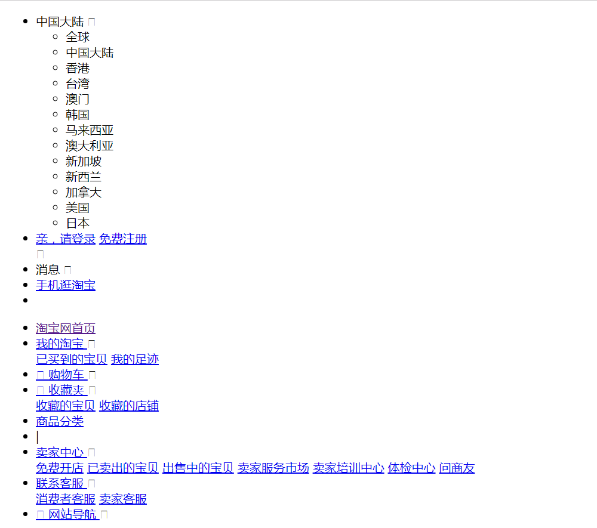

课程目标
- 了解Css是什么以及作用
- 掌握Css的三种引用方式
- 掌握Css样式规则（语法）
- 熟记CSS字体样式属性
Css介绍
Css的产生
从HTML被发明开始，样式就以各种形式存在。不同的浏览器结合它们各自的样式语言为用户提供页面效果的控制。最初的HTML只包含很少的显示属性。
随着HTML的成长，为了满足页面设计者的要求，HTML添加了很多显示功能。但是随着这些功能的增加，HTML变的越来越杂乱，而且HTML页面也越来越臃肿。于是CSS便诞生了。
案例演示：html里面的样式属性
网页的美容师
CSS的出现，拯救了混乱的HTML，更加拯救了我们web开发者。 让我们的网页更加丰富多彩。
CSS的最大贡献就是：让 HTML 从样式中解脱苦海，实现了 HTML 专注去做结构呈现。
这就是我们之前常说的结构、表现、行为相分离。


有人说， 没有不漂亮的女人，只有不会打扮的女人。
我想说， 没有不好看的网页，只有不会CSS的前端。
网页添加 CSS和不添加CSS 的对比：
带有CSS的页面

没有CSS的页面

Css层叠样式表
CSS(Cascading Style Sheets)
CSS通常称为CSS样式表或层叠样式表（级联样式表），主要用于设置HTML页面中的文本内容（字体、大小、对齐方式等）、图片的外形（宽高、边框样式、边距等）以及版面的布局等外观显示样式。
CSS以HTML为基础，提供了丰富的功能，如字体、颜色、背景的控制及整体排版等，而且还可以针对不同的浏览器设置不同的样式。
Css样式规则（语法）
使用HTML时，需要遵从一定的规范。CSS亦如此，要想熟练地使用CSS对网页进行修饰，首先需要了解CSS样式规则，具体格式如下：

在上面的样式规则中:
- 选择器用于指定CSS样式作用的HTML对象，花括号内是对该对象设置的具体样式。
- 属性和属性值以“键值对”的形式出现。
- 属性是对指定的对象设置的样式属性，例如字体大小、文本颜色等。
- 属性和属性值之间用英文“:”连接。
- 多个“键值对”之间用英文“;”进行区分。
案例演示：Css样式的规则
Css的引入方式
行内样式
在html的标签中使用style属性为元素定义样式
<p style="color: red;">这是一个段落</p>
内部样式
在head中使用<style>标签为元素定义样式
<head>
<style type="text/css">
p {color: red;}
</style>
</head>
<body>
<p>这是一个段落</p>
</body>
属性：
- type="text/css" 文档类型为"文本/层叠样式表"
外部样式
在head中使用<link>标签链接一个外部样式表
<head>
<link href="style.css" rel="stylesheet" type="text/css" />
</head>
属性：
- href="style.css" 链接外部样式文件。
- type="text/css" 文档类型为"文本/层叠样式表"。
- rel="stylesheet" 描述当前页面与href所链接文档的关系，即：href连接的文档是一个样式表。
浏览器样式
浏览器本身也对部分标签设置了某些特殊样式，比如h1、p标签等
浏览器自带样式各不相同，实际应用中通常会重置浏览器自带的标签样式
<style type=”text/css”>
a{text-decoration: none;}
</style>
样式的优先级
样式引入方式的优先级如下：
- 行内样式优先级最高
- style标签和link标签，谁后声明，谁的优先级最高
- 浏览器的内置样式优先级最低
案例演示：Css样式的优先级
CSS字体样式属性
font-size:字号大小
font-size属性用于设置字号，该属性的值可以使用相对长度单位，也可以使用绝对长度单位。其中，相对长度单位比较常用，推荐使用像素单位px，绝对长度单位使用较少。具体如下：

font-family:字体
font-family属性用于设置字体。网页中常用的字体有宋体、微软雅黑、黑体等
例如将网页中所有段落文本的字体设置为宋体（SimSun），可以使用如下CSS样式代码：
p { font-family:SimSun;}
字体名称：
在 CSS 中设置字体名称，直接写中文是可以的。但是在文件编码（GB2312、UTF-8 等）不匹配时会产生乱码的错误。xp 系统不支持 类似微软雅黑的中文。
方案一： 你可以使用英文来替代。 比如 font-family:"Microsoft Yahei"。
方案二： 在 CSS 直接使用 Unicode 编码来写字体名称可以避免这些错误。使用 Unicode 写中文字体名称，浏览器是可以正确的解析的。表示设置字体为“微软雅黑”：
font-family: "\5FAE\8F6F\96C5\9ED1"
| 字体名称 | 英文名称 | Unicode 编码 |
|---|---|---|
| 宋体 | SimSun | \5B8B\4F53 |
| 黑体 | SimHei | \9ED1\4F53 |
| 微软雅黑 | Microsoft YaHei | \5FAE\8F6F\96C5\9ED1 |
| 新宋体 | NSimSun | \65B0\5B8B\4F53 |
| 楷体_GB2312 | KaiTi_GB2312 | \6977\4F53_GB2312 |
| 隶书 | LiSu | \96B6\4E66 |
| 幼园 | YouYuan | \5E7C\5706 |
| 华文细黑 | STXihei | \534E\6587\7EC6\9ED1 |
| 细明体 | MingLiU | \7EC6\660E\4F53 |
| 新细明体 | PMingLiU | \65B0\7EC6\660E\4F53 |
多个字体：
可以同时指定多个字体，中间以逗号隔开，表示如果浏览器不支持第一个字体，则会尝试下一个，直到找到合适的字体。
p { font-family:SimSun,"Microsoft YaHei","黑体",\65B0\5B8B\4F53;}
font-weight:字体粗细
字体加粗除了用 b 和 strong 标签之外，可以使用CSS 来实现，但是CSS 是没有语义的。
font-weight属性用于定义字体的粗细，其可用属性值：
- normal 正常。
- bold 粗体。
- bolder 比粗体更加粗。
- lighter 比正常更细。
- 100~900（100的整数倍）共9个等级。
技巧：数字 400 等价于 normal，而 700 等价于 bold。但是我们更喜欢用数字来表示。
font-style:字体风格
字体倾斜除了用 i 和 em 标签之外，可以使用CSS 来实现，但是CSS 是没有语义的。
font-style属性用于定义字体风格，如设置斜体、倾斜或正常字体，其可用属性值如下：
- normal：默认值，浏览器会显示标准的字体样式。
- italic：浏览器会显示有斜体的字体的斜体样式。
- oblique：浏览器会让没有斜体属性的文字倾斜。
技巧：平时我们很少给文字加斜体，反而喜欢给斜体标签（em，i）改为普通模式。
font:综合设置字体样式
font属性用于对字体样式进行综合设置，其基本语法格式如下：
选择器 { font: font-style font-weight font-size/line-height font-family;}
p { font:italic 400 14px/22px "Microsoft Yahei"; }
注意：
- 使用font属性时，必须按上面语法格式中的顺序书写，不能更换顺序，各个属性以空格隔开。
- 其中不需要设置的属性可以省略（取默认值），但必须保留font-size和font-family属性，否则font属性将不起作用。